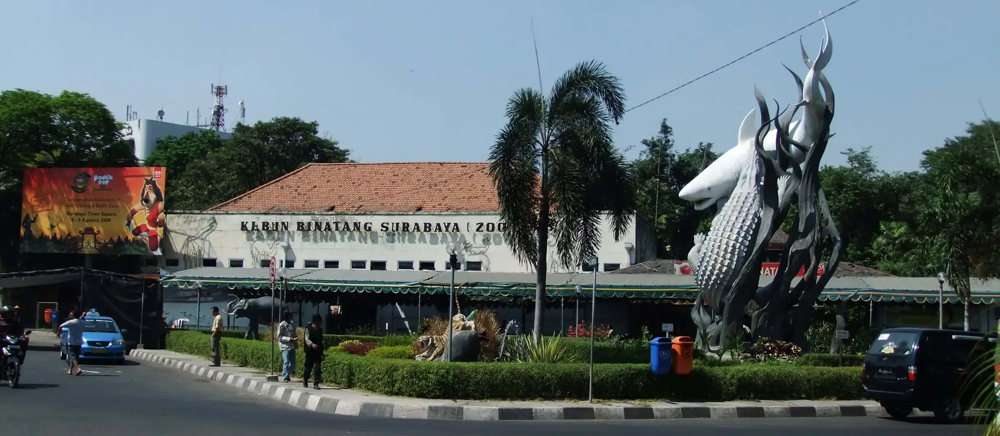
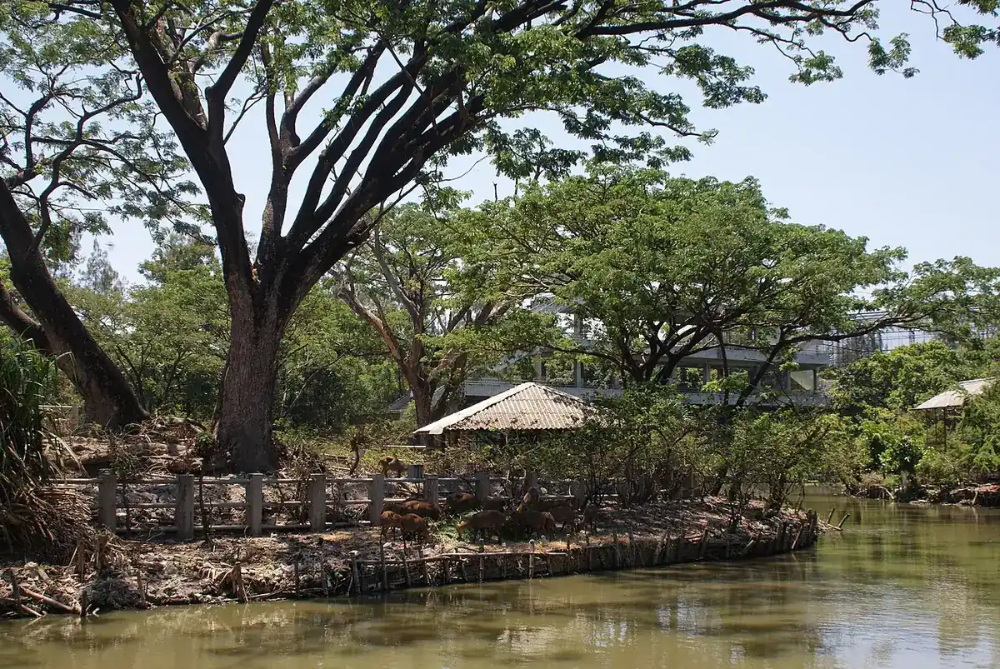
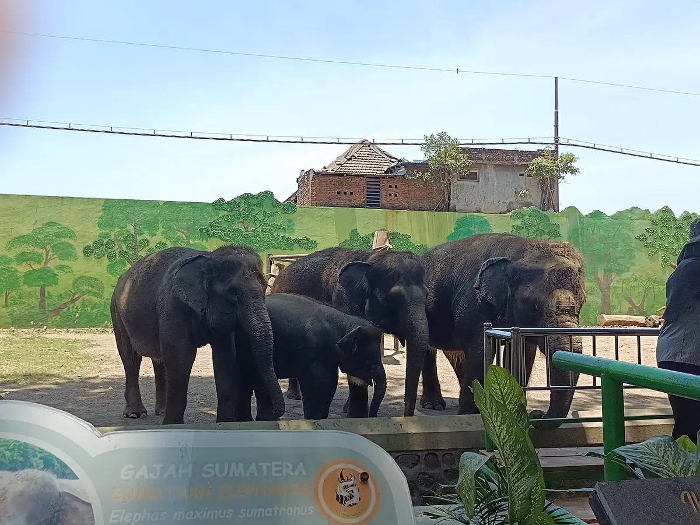
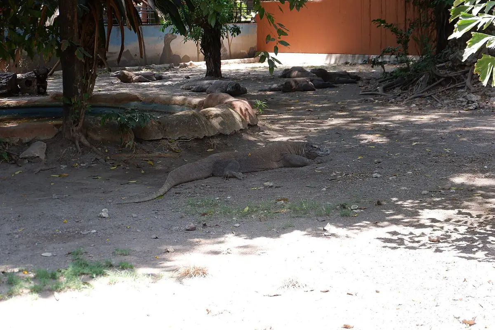

Kebun binatang di Darmo, Surabaya
Berdiri sejak 1916. Buka setiap hari 08.00–16.00, tiket masuk Rp15.000.
Lokasi dan jam buka
- Setiap hari
- 08.00–16.00
- Libur nasional
- Tetap buka
- Luas kawasanSekitar 15 hektare
- Pembayaran loketNontunai dianjurkan

Harga tiket dan paket
Harga sama untuk hari biasa, akhir pekan, dan libur nasional.
Lihat semua hargaTiket satuan
- Tiket masukSemua hariRp15.000
- Anak di bawah 85 cmTanpa tiketGratis
- Pakan Kids ZooPaket feedingRp35.000
- Animal EdutainmentAkhir pekanRp25.000
- AquanoctudioWahana malamRp30.000
Paket terusan
- Paket AMasuk dan 3 wahanaRp65.000
- Paket BMasuk dan 2 wahanaRp45.000
- Paket CMasuk dan 2 wahanaRp35.000
- Paket DMasuk dan 2 wahanaRp30.000
- Paket EMasuk dan 1 wahanaRp20.000


Bekantan, harimau putih, orang utan, merak
Lebih dari 2.000 satwa tinggal di Darmo, banyak di antaranya satwa asli Indonesia.
Lihat semua satwa
Sejak 1916
Kebun Binatang Surabaya berdiri pada 31 Agustus 1916 dari koleksi satwa wartawan H.F.K. Kommer di halaman rumahnya di Kaliondo. Pada 1920 lahan seluas 30.400 m² di Darmo diserahkan untuk memperluasnya.